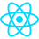
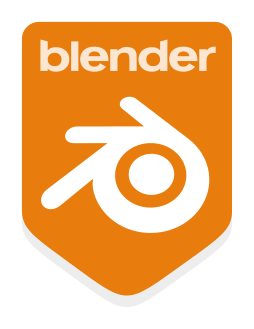
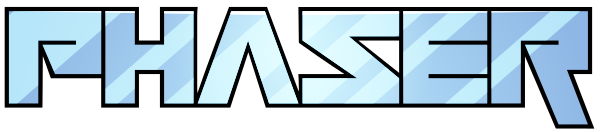

Dariusz Russek
- call +48 506 368 406
- mail dariu.russ@gmail.com
Jestem pasjonatem informatyki oraz absolwentem studiów inżynierskich na kierunku Informatyka na Uniwersytecie Śląskim. Interesuję się szeroko pojętymi technologiami IT, w szczególności tworzeniem aplikacji webowych, wsparciem technicznym oraz administracją systemów. Posiadam doświadczenie w pracy z technologiami takimi jak HTML, CSS, JavaScript i TypeScript, a także podstawową wiedzę z zakresu systemów operacyjnych i rozwiązań chmurowych.
W trakcie studiów realizowałem różnorodne projekty, w tym aplikacje webowe oraz projekty interaktywne, które pozwoliły mi rozwinąć umiejętności analityczne i rozwiązywania problemów. Zdobyłem również podstawowe doświadczenie w konfiguracji systemów, diagnozowaniu usterek oraz pracy z różnymi narzędziami i środowiskami IT.
Obecnie poszukuję możliwości rozpoczęcia kariery zawodowej w branży IT — zarówno w obszarze web developmentu, jak i wsparcia technicznego czy administracji systemami. Jestem osobą zmotywowaną do nauki, szybko przyswajam nowe umiejętności i chcę rozwijać się w praktycznym środowisku pracy. Cechuje mnie dobra organizacja pracy, umiejętność działania zarówno samodzielnie, jak i w zespole, oraz chęć ciągłego rozwoju. Posługuję się językiem angielskim na poziomie B2 oraz posiadam podstawową znajomość języka niemieckiego.
W wolnym czasie interesuję się grami komputerowymi oraz nowymi technologiami, co dodatkowo rozwija moją pasję do IT.
Edukacja
-
Uniwersytet Śląski
10/2020 - 05/2024Studia inżynierskie
Informatyka - specjalizacja Programista Gier Komputerowych -
Centrum Kształcenia Zawodowego i Ustawicznego nr 2, Wadowice
09/2016 - 04/2020Technikum informatyczne
Technik informatyk z certyfikatem kompetencji zawodowych, numer referencyjny 351203.
Doświadczenie zawodowe
-
SERWIS KOMPUTEROWY IT, Wadowice
07/2020 Miesiąc stażu w serwisie komputerowym -
Fideltronik, Sucha Beskidzka
07/2018 Miesiąc stażu w dziale Help Desk:- • naprawa sprzętu komputerowego,
- • rozwój sieci w budynku firmowym oraz na hali produkcyjnej,
Umiejętności
Web development:
- - HTML 5
- - CSS 3
- - Javascript
- - TypeScript
- - AWS Platform
- - Postgresql
-

- React - - Material UI
- - Figma
- - npm
Help Desk
Systemy operacyjne:
- Windows desktop 10/11
- Windows server 2019/22
- Linux (Debian/Ubuntu/Fedora)
Sieci komputerowe:
- TCP/IP, LAN/WAN
- Konfigurowanie sieci wirtualnych i fizyczny
- Analiza i diagnostyka sieci
- Konfiguracji urządzeń sieciowych oraz instalacji okablowania sieciowego
Wsparcie i troubleshooting:
- Diagnostyki problemów sprzętowych i systemowych
- Instalacja i konfiguracja systemów
- Podstaw administracji środowiskiem Windows Server (AD, DNS, DHCP)
- Konfiguracji oraz serwisu urządzeń peryferyjnych (drukarki, urządzenia wielofunkcyjne)
Game development:
-

- Blender - - Unreal Engine
-

- Phaser JS